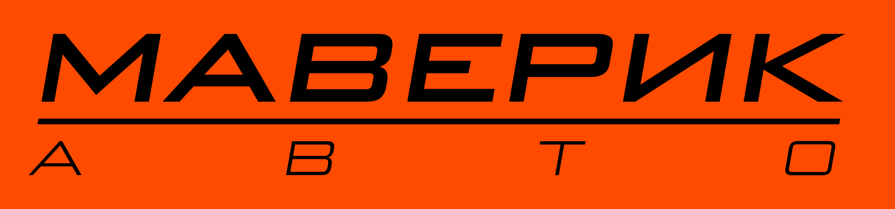
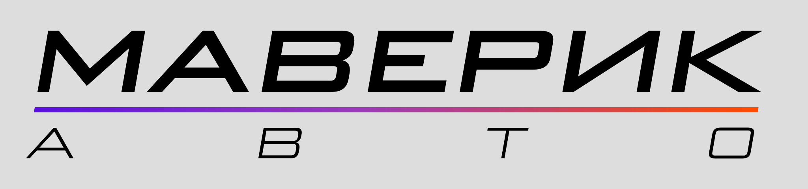
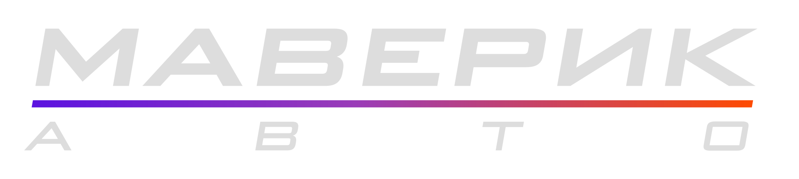
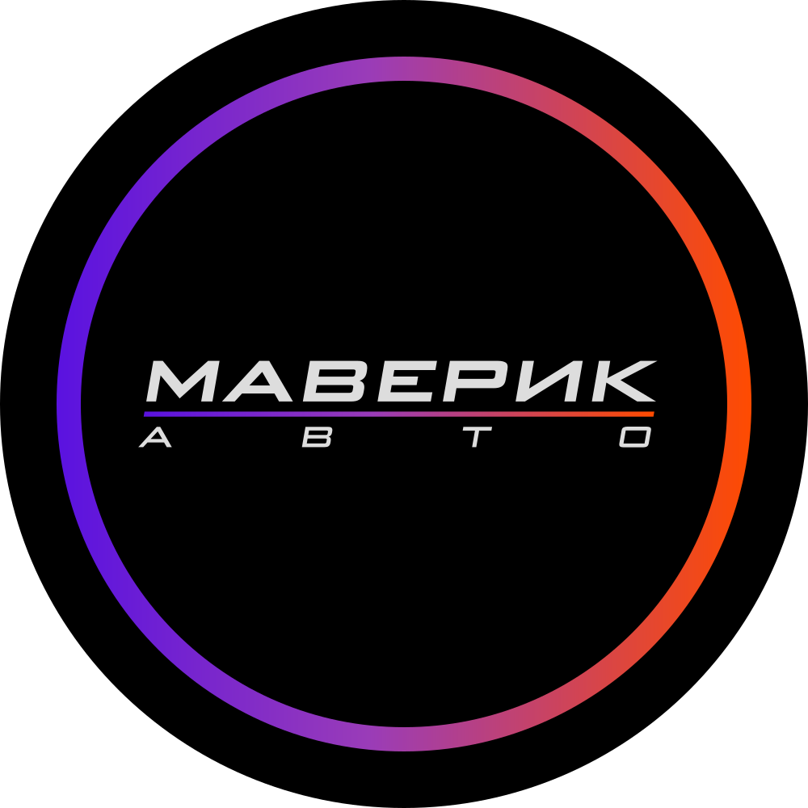
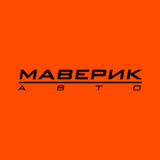
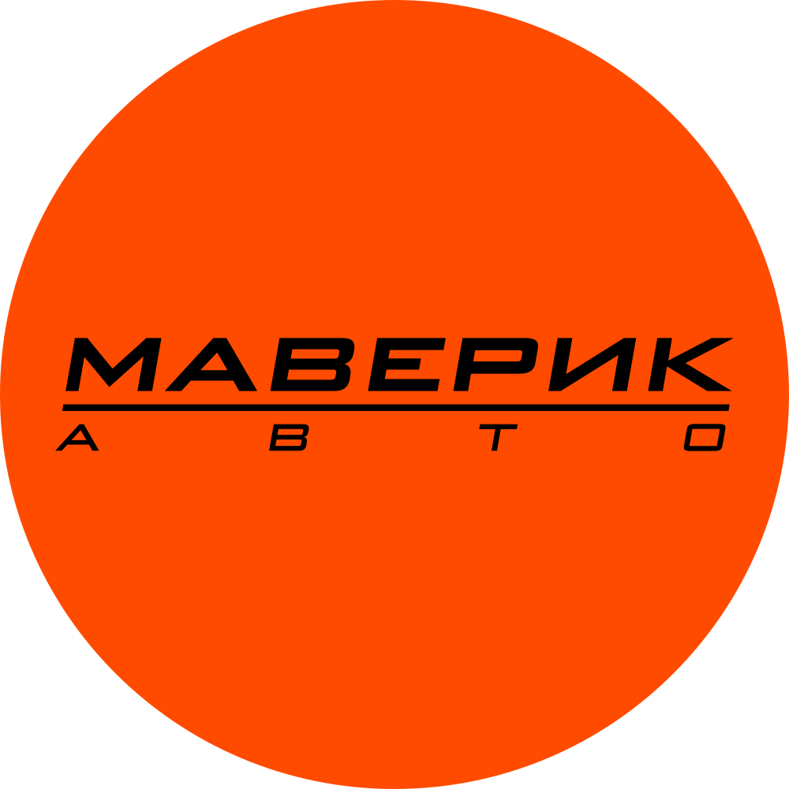
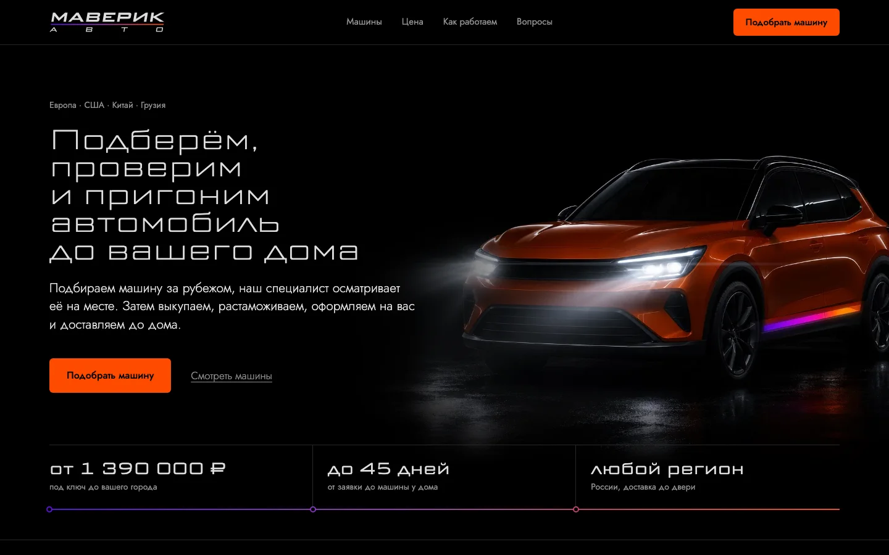
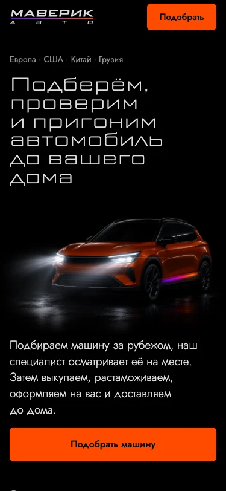

Логотип
Название целиком: «МАВЕРИК» и под ним «А В Т О» на ту же ширину, с наклоном и цветной лентой между словами.




Аватарка и значок сайта

АватаркаTelegram, MAX, Instagram — одна для всех. Логотип целиком в чёрном круге, кольцо цветом ленты.


Значок сайтаво вкладке браузера и на экране телефона, если сохранить сайт. Оранжевый, название целиком.
Цвета
Чёрный — основа, оранжевый — единственный акцент. Цвета для печати типография уточнит по пробному оттиску.
Шрифты
Оба бесплатные (лицензия OFL), с кириллицей — можно использовать везде без оплаты.
Science Gothic
Аа Бб
Подберём, проверим и пригоним
1 790 000 ₽
Заголовки, цены, крупные цифры
Jost
Аа Бб
Специалист лично проверяет кузов и окрас, проводит диагностику, сверяет документы. Не подошла — ищем другую.
Текст, подписи, кнопки
Визитки
90 × 50 мм. Два варианта на выбор: основная чёрная и альтернатива — оранжевая. На обороте — то же, что на нынешних визитках: имя, телефон, QR-код на Telegram-канал.
Нажмите на картинку, чтобы открыть крупно
Профиль, сторис и шаблоны постов: машина с ценой, отзыв, этап работы, слоган. Машины, цены и отзыв — настоящие, из канала и с Авито. Имя аккаунта maverik.avto — пример.
Нажмите на картинку, чтобы открыть крупно
Telegram и MAX
Лента канала с закреплённым постом «Как проходит покупка», профиль канала, MAX. Цифры — с канала на 17 ноября. Название «Маверик авто» и описание — предложение: сейчас канал в Telegram называется «Автоподбор под ключ! Автомобили из США и Европы!».
Нажмите на картинку, чтобы открыть крупно
Сайт
Тот же стиль на сайте. Сейчас он на временном адресе — после выбора домена переедет.

